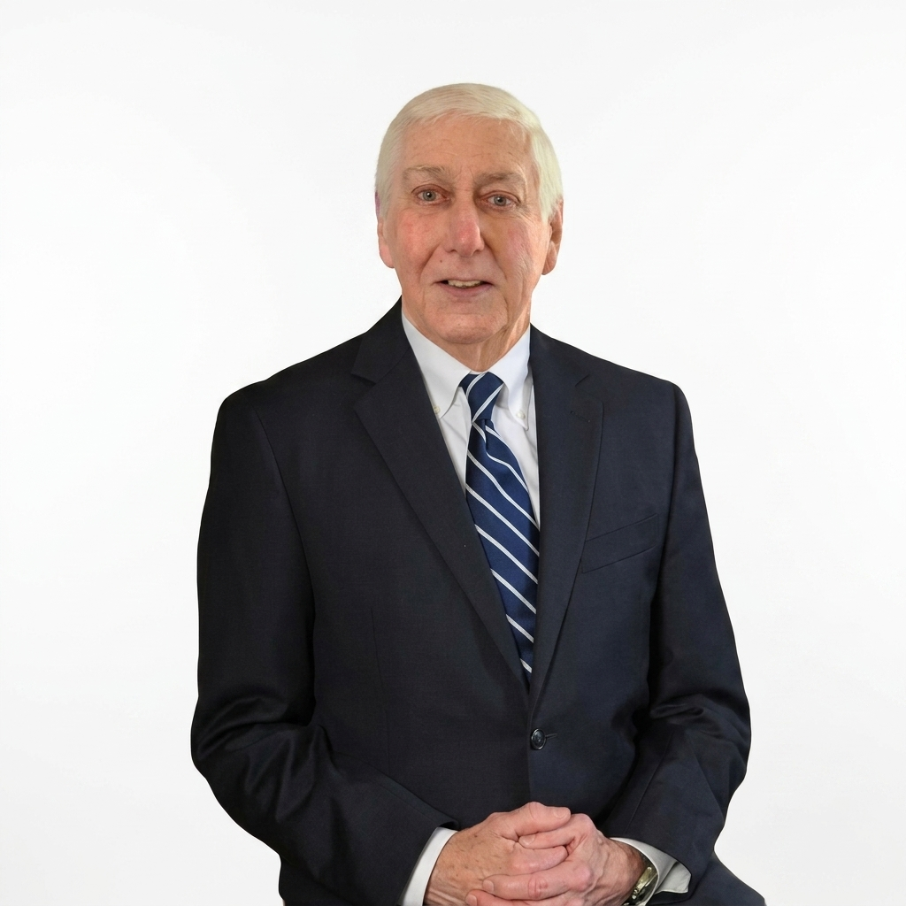

<!DOCTYPE html>
<html lang="zh-Hans">
<head>
<meta charset="UTF-8">
<meta name="viewport" content="width=device-width, initial-scale=1.0">
<title>法律业务 | 德扬集团 Bird & Yang</title>
<meta name="description" content="德扬律师事务所提供移民、房产、商业法务、家庭与雇佣、诉讼等一站式法律服务，以专业指引方向，以清晰守护所托。">
<link rel="canonical" href="https://birdyang.pages.dev/zh/legal.html">
<link rel="alternate" hreflang="zh" href="https://birdyang.pages.dev/zh/legal.html">
<link rel="alternate" hreflang="en" href="https://birdyang.pages.dev/legal.html">
<link rel="alternate" hreflang="x-default" href="https://birdyang.pages.dev/legal.html">
<link rel="stylesheet" href="../style.css">
<style>
body{font-family:"PingFang SC","Hiragino Sans GB","Microsoft YaHei","Noto Sans SC",Verdana,Geneva,sans-serif}
.hero-banner h1{letter-spacing:.15em}
.section-title{letter-spacing:.06em}
</style>
</head>
<body>

<!-- NAVIGATION -->
<div id="site-nav"></div>
<script src="/components/nav.js"></script>
<script>renderNav({active:"legal",lang:"zh",transparent:true})</script>

<!-- APP -->
<main id="app"></main>

<!-- FOOTER -->
<div id="site-footer"></div>
<script src="/components/footer.js"></script>
<script>renderFooter({lang:"zh"})</script>

<script>
(function() {
  var app = document.getElementById('app');

  /* --- ROUTES --- */
  var routes = {
    'home': renderHome,
    'immigration': renderImmigration
  };

  /* --- ROUTER --- */
  function navigate() {
    var hash = location.hash.slice(1) || 'home';
    var render = routes[hash] || renderHome;
    app.innerHTML = render();
    window.scrollTo(0, 0);
    initReveal();
  }

  window.addEventListener('hashchange', navigate);
  window.addEventListener('DOMContentLoaded', navigate);
  navigate();

  /* --- NAV SCROLL EFFECT --- */
  window.addEventListener('scroll', function() {
    var nav = document.querySelector('nav');
    if (window.scrollY > 60) {
      nav.classList.add('scrolled');
      nav.classList.remove('transparent');
    } else {
      nav.classList.remove('scrolled');
      nav.classList.add('transparent');
    }
  });

  /* --- SCROLL REVEAL --- */
  function initReveal() {
    var els = document.querySelectorAll('.reveal');
    var observer = new IntersectionObserver(function(entries) {
      entries.forEach(function(entry) {
        if (entry.isIntersecting) {
          entry.target.classList.add('visible');
        }
      });
    }, { threshold: 0.15 });
    els.forEach(function(el) { observer.observe(el); });
  }

  /* --- PAGE: #home (法务首页) --- */
  function renderHome() {
    return '' +
    '<div class="hero-banner hero-glow" style="background:url(../assets/images/02_LegalHome01_FirstSight.png) center/cover no-repeat">' +

      '<h1>法律业务</h1>' +
      '<p class="hero-sub">以专业指引方向，以清晰守护所托</p>' +
    '</div>' +

    '<section class="bg-cream reveal">' +
      '<div class="container">' +
        '<div class="section-label">关于我们的法律业务</div>' +
        '<div class="about-text">' +
          '<p>每一个法律事务，无论多么复杂，最终都只有一个问题：什么对你而言最重要？在德扬，我们先倾听，再以清晰的法律指导、用心的文化理解，为客户妥善处理每一件事务。</p>' +
        '</div>' +
        '<div class="steps" style="margin-top:40px">' +
          '<div class="step"><div class="step-number">1</div><h3>先倾听</h3></div>' +
          '<div class="step"><div class="step-number">2</div><h3>重清晰</h3></div>' +
          '<div class="step"><div class="step-number">3</div><h3>懂文化</h3></div>' +
        '</div>' +
      '</div>' +
    '</section>' +

    '<section class="bg-white reveal">' +
      '<div class="container">' +
        '<div class="section-label">服务范围</div>' +
        '<h2 class="section-title">我们的专业</h2>' +
        '<div class="cards-grid">' +
          '<a class="service-card" href="#immigration">' +
            '<div class="card-icon-area"><div class="icon-circle"></div></div>' +
            '<div class="card-body"><h3>移民</h3><p>协助客户处理留学签证与移民签证，以定制专业方式配合申请与审批</p><span class="learn-more">了解更多 &rarr;</span></div>' +
          '</a>' +
          '<div class="service-card">' +
            '<div class="card-icon-area"><div class="icon-circle"></div></div>' +
            '<div class="card-body"><h3>房产与开发</h3><p>支持买卖、开发及相关法律风险管理</p></div>' +
          '</div>' +
          '<div class="service-card">' +
            '<div class="card-icon-area"><div class="icon-circle"></div></div>' +
            '<div class="card-body"><h3>商业法务</h3><p>涉及企业设立、规章、商业风险管理</p></div>' +
          '</div>' +
          '<div class="service-card">' +
            '<div class="card-icon-area"><div class="icon-circle"></div></div>' +
            '<div class="card-body"><h3>家族财富规划、信托与遗嘱</h3><p>帮助客户保护家庭、资产与未来安排</p></div>' +
          '</div>' +
          '<div class="service-card">' +
            '<div class="card-icon-area"><div class="icon-circle"></div></div>' +
            '<div class="card-body"><h3>家庭与雇佣</h3><p>为家庭事务与雇佣关系提供专业法律判断</p></div>' +
          '</div>' +
          '<div class="service-card">' +
            '<div class="card-icon-area"><div class="icon-circle"></div></div>' +
            '<div class="card-body"><h3>诉讼与争议解决</h3><p>根据客户具体方案，解决争议并推清前进路径</p></div>' +
          '</div>' +
          '<div class="service-card">' +
            '<div class="card-icon-area"><div class="icon-circle"></div></div>' +
            '<div class="card-body"><h3>中国业务/跨境服务</h3><p>以双语和文化能力，为中国客户在海外发展出清晰法律支撑</p></div>' +
          '</div>' +
        '</div>' +
      '</div>' +
    '</section>' +

    '<section class="bg-cream reveal">' +
      '<div class="container">' +
        '<div class="section-label">我们的团队</div>' +
        '<h2 class="section-title">专业团队</h2>' +
        '<div class="team-grid">' +
          '<div class="team-card"><h4>Marshall Bird</h4><p>合伙人/大律师</p></div>' +
          '<div class="team-card"><h4>Aimee Yang</h4><p>合伙人/大律师</p></div>' +
          '<div class="team-card"><h4>Julia Huang</h4><p>大律师</p></div>' +
          '<div class="team-card"><h4>Ming Lu</h4><p>信托与财务经理</p></div>' +
          '<div class="team-card"><h4>Cici Du</h4><p>注册法律行政官</p></div>' +
          '<div class="team-card"><h4>Rockie Wei</h4><p>法律行政官</p></div>' +
        '</div>' +
      '</div>' +
    '</section>';
  }

  /* --- PAGE: #immigration (投资移民路径解读) --- */
  function renderImmigration() {
    return '' +
    '<div class="hero-banner">' +
      '<div class="breadcrumb"><a href="#home">法律业务</a> &gt; 投资移民</div>' +
      '<h1>投资移民路径解读</h1>' +
      '<p class="hero-sub">现行规则与历史类别的专业理解</p>' +
    '</div>' +

    '<section>' +
      '<div class="container">' +
        '<a class="back-link" href="#home">&larr; 返回法律业务</a>' +
        '<div class="two-col">' +

          /* Main Content */
          '<div class="main-content">' +
            '<p style="font-size:.88rem;color:var(--charcoal);line-height:1.85;margin-bottom:32px">以移民事务为例：复杂不只是文件多，而是逻辑多。很多客户最初以为，投资移民只是准备材料、提交申请。但在实际操作中，它涉往返及资金来源证明、中西方理解差异以及不确定的处理周期。真正的难点，不只是"材料多"，而是如何把复杂背景整理成清楚、可信、合规、可审查的申请逻辑。</p>' +

            '<div class="section-label" style="text-align:left;margin-bottom:20px">现行官方路径</div>' +
            '<h2 style="font-size:1.2rem;font-weight:700;color:var(--blue);margin-bottom:24px">积极投资者加签证</h2>' +
            '<div style="display:grid;gap:16px;margin-bottom:40px">' +
              '<div style="background:var(--white);border-radius:var(--radius);padding:24px;box-shadow:0 2px 8px rgba(0,0,0,.06);border-left:3px solid var(--gold)">' +
                '<h3 style="font-size:.92rem;font-weight:700;color:var(--blue);margin-bottom:8px">增长类别</h3>' +
                '<p style="font-size:.82rem;color:var(--muted);line-height:1.7">至少 NZD 500万，投资期通常为3年</p>' +
              '</div>' +
              '<div style="background:var(--white);border-radius:var(--radius);padding:24px;box-shadow:0 2px 8px rgba(0,0,0,.06);border-left:3px solid var(--gold)">' +
                '<h3 style="font-size:.92rem;font-weight:700;color:var(--blue);margin-bottom:8px">平衡类别</h3>' +
                '<p style="font-size:.82rem;color:var(--muted);line-height:1.7">至少 NZD 1000万，投资期通常为5年</p>' +
              '</div>' +
            '</div>' +

            '<div class="section-label" style="text-align:left;margin-bottom:20px">历史类别事务</div>' +
            '<h2 style="font-size:1.2rem;font-weight:700;color:var(--blue);margin-bottom:24px">投资者1 / 投资者2</h2>' +
            '<div style="display:grid;gap:16px;margin-bottom:20px">' +
              '<div style="background:var(--white);border-radius:var(--radius);padding:24px;box-shadow:0 2px 8px rgba(0,0,0,.06);border-left:3px solid var(--gold)">' +
                '<h3 style="font-size:.92rem;font-weight:700;color:var(--blue);margin-bottom:8px">投资者1</h3>' +
                '<p style="font-size:.82rem;color:var(--muted);line-height:1.7">历史类别，通常为NZD 1000万 / 3年</p>' +
              '</div>' +
              '<div style="background:var(--white);border-radius:var(--radius);padding:24px;box-shadow:0 2px 8px rgba(0,0,0,.06);border-left:3px solid var(--gold)">' +
                '<h3 style="font-size:.92rem;font-weight:700;color:var(--blue);margin-bottom:8px">投资者2</h3>' +
                '<p style="font-size:.82rem;color:var(--muted);line-height:1.7">历史类别，通常为NZD 300万 / 4年</p>' +
              '</div>' +
            '</div>' +
            '<p style="font-size:.78rem;color:var(--muted);font-style:italic;margin-bottom:40px">注：投资者1与投资者2已于2022年7月27日停止接受新申请。</p>' +

            '<div class="section-label" style="text-align:left;margin-bottom:20px">我们的方法</div>' +
            '<h2 style="font-size:1.2rem;font-weight:700;color:var(--blue);margin-bottom:24px">德扬如何化繁为简</h2>' +
            '<div style="display:grid;gap:20px;margin-bottom:48px">' +
              '<div style="display:flex;gap:16px;align-items:flex-start">' +
                '<div style="min-width:36px;height:36px;border-radius:50%;background:var(--blue);color:var(--gold);display:flex;align-items:center;justify-content:center;font-weight:700;font-size:.85rem">1</div>' +
                '<div><h4 style="font-size:.85rem;font-weight:700;color:var(--blue);margin-bottom:4px">资金从哪里来？</h4><p style="font-size:.8rem;color:var(--muted);line-height:1.7">梳理资金来源过程、资产证明逻辑、资金流转路径及相关支持文件</p></div>' +
              '</div>' +
              '<div style="display:flex;gap:16px;align-items:flex-start">' +
                '<div style="min-width:36px;height:36px;border-radius:50%;background:var(--blue);color:var(--gold);display:flex;align-items:center;justify-content:center;font-weight:700;font-size:.85rem">2</div>' +
                '<div><h4 style="font-size:.85rem;font-weight:700;color:var(--blue);margin-bottom:4px">资料是否足够可信？</h4><p style="font-size:.8rem;color:var(--muted);line-height:1.7">判断现有文件是否完整、是否一致、是否能够支持申请教权</p></div>' +
              '</div>' +
              '<div style="display:flex;gap:16px;align-items:flex-start">' +
                '<div style="min-width:36px;height:36px;border-radius:50%;background:var(--blue);color:var(--gold);display:flex;align-items:center;justify-content:center;font-weight:700;font-size:.85rem">3</div>' +
                '<div><h4 style="font-size:.85rem;font-weight:700;color:var(--blue);margin-bottom:4px">移民官能如何理解这件事？</h4><p style="font-size:.8rem;color:var(--muted);line-height:1.7">从新西兰审理逻辑出发，把中国商业、家庭和投资背景转化为更清晰的专业表达</p></div>' +
              '</div>' +
              '<div style="display:flex;gap:16px;align-items:flex-start">' +
                '<div style="min-width:36px;height:36px;border-radius:50%;background:var(--blue);color:var(--gold);display:flex;align-items:center;justify-content:center;font-weight:700;font-size:.85rem">4</div>' +
                '<div><h4 style="font-size:.85rem;font-weight:700;color:var(--blue);margin-bottom:4px">申请路径是否与客户目标一致？</h4><p style="font-size:.8rem;color:var(--muted);line-height:1.7">关注客户长期目标：子女、投资、资产配置</p></div>' +
              '</div>' +
              '<div style="display:flex;gap:16px;align-items:flex-start">' +
                '<div style="min-width:36px;height:36px;border-radius:50%;background:var(--blue);color:var(--gold);display:flex;align-items:center;justify-content:center;font-weight:700;font-size:.85rem">5</div>' +
                '<div><h4 style="font-size:.85rem;font-weight:700;color:var(--blue);margin-bottom:4px">是否需要财税、公司或商业计划支持？</h4><p style="font-size:.8rem;color:var(--muted);line-height:1.7">通过法务、会计、咨询的整合视角，减少信息断裂</p></div>' +
              '</div>' +
            '</div>' +
          '</div>' +

          /* Sidebar */
          '<div class="sidebar">' +
            '<div class="sidebar-card">' +
              '<h3>为什么选择德扬</h3>' +
              '<div class="why-item"><h4>商业视角的法律指导</h4><p>我们理解投资与商业移民涉及商业结构、投资规划、税务考量</p></div>' +
              '<div class="why-item"><h4>跨境经验</h4><p>协助新西兰、中国及更广泛跨境事务的客户</p></div>' +
              '<div class="why-item"><h4>整合支持</h4><p>会计、商业与金融专业人士协同合作</p></div>' +
            '</div>' +
            '<a href="contact.html" class="cta-btn primary" style="width:100%;display:block;text-align:center">预约咨询</a>' +
          '</div>' +

        '</div>' +
      '</div>' +
    '</section>';
  }

})();
</script>
<script src="/components/chatbot.js"></script>
<script>renderChatbot({lang:"zh"})</script>
</body>
</html>
